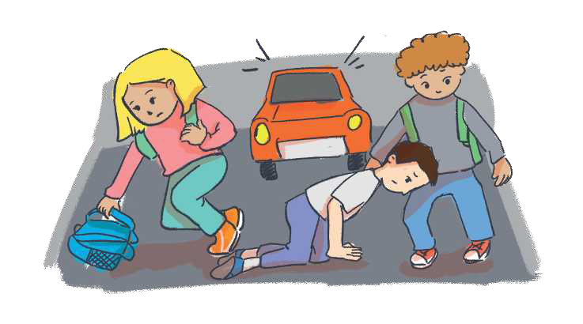

TEMATIKA 4: NJOHJA E RREZIQEVE
1.KI KUJDES, DIELLI!

Mësimi mbaroi. Nxënësit u nisën për në shtëpi. Dielli me shokët po vraponte i shkujdesur. Papritmas i rrëshqiti këmba dhe, nga trotuari, u rrëzua në rrugë. Në atë çast u dëgjua një bori e fortë makine.
Dita dhe shokët e tërhoqën Diellin me sa fuqi që kishin nga rruga. Dita, kur e pa që nuk ishte vrarë shumë, i tha që nuk duhet të vraponte kurrë në rrugë me shumë njerëz dhe makina!